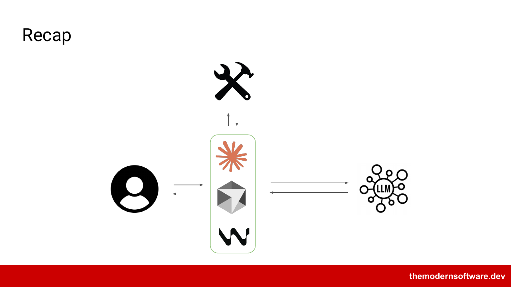
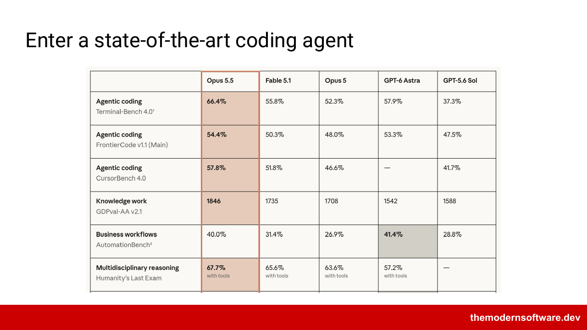
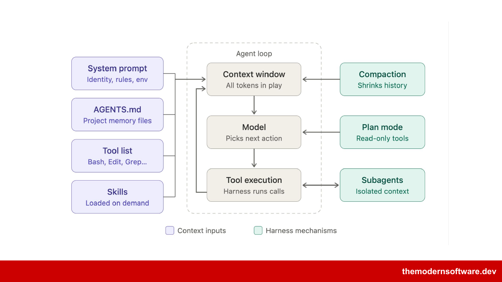

Stanford CS146S · The Modern Software Developer · 第 2 讲 · 讲者 Mihail Eric
第 2 讲：拆开一个现代编码智能体的 Harness
上一讲用约 200 行代码搭出了编码智能体的核心循环。这一讲是 CS146S 在 Stanford Fall 2026 学期第 1 周周四（2026 年 9 月 24 日）的课，讲者把一个当时最新的 Claude Code 请求截下来，逐块拆看：循环之外，Harness 还往模型面前放了什么。
材料：讲义 17 页（文字取自讲义导出文本，3 张原图是 PDF 同页渲染）和讲课实录全文。实录的公开地址未确认。
期末项目、额度和候补名单
- 期末项目说明已发布，学季里约有四个里程碑（含提案）。课件：团队可以额外加 1 名成员，再加一群编码智能体；讲者说独自做也可以，现在甚至很合适。
- 除了开源合作项目和嘉宾讲座这些课程福利，课程还拿到了几家编码智能体厂商的额度（Credits）（讲者顺口说：有的严格说还是私有公司，但百亿美元的公司很难再叫初创）：Claude（Claude Code）、Factory、X.AI、Devin（讲者说 Windsurf 和 Devin 同属 Cognition）。预计下周发放，可能收集邮箱或用二维码。
- 开源合作伙伴（OSS）的具体形式下周讲，每个 OSS 合作方下周都会介绍。讲者相信至少有一两位合作方会来课前讲五到十分钟，也可能开线上或线下答疑。
- 候补名单申请的截止日：课件写 9/27，讲者说是 27 号、大概是周日；申请在 Google 表单里排队，未来几天处理。先修要求不算高，在别校修过同等课程可以申请例外。
- 学生问课件：周二的已在课程网站上，今天的还没有，讲者说会尽量在课前上传；还没进 Ed 讨论区的人可以给课程方发消息。开场时讲者说已经晚了 35 秒。
补充（据 FA26 课程日历，2026-10-26 读取）：本讲日历标题是「How state-of-the-art coding agents are designed (system prompts deep dive)」；第 1 个作业「Claude Code dissection」在 9 月 27 日周日截止。
讲义： 出处：The Modern Software Developer 出处：Logistics
实录： 出处：讲课实录 出处：Mihail Eric (00:59.926) 出处：Mihail Eric (01:57.876) 出处：Mihail Eric (03:41.624) 出处：Mihail Eric (05:40.28) 出处：Mihail Eric (07:28.536) 出处：Mihail Eric (07:41.038) 出处：Mihail Eric (07:58.626)
循环没变，变的是包在外面的 Harness
讲者回顾：周二演示了用 150 到 200 行代码搭出编码智能体的骨架，能理解请求、改代码和文件，从 Hello world 做到有点复杂的东西。那是概念验证；这一讲要拆一个最先进的编码智能体。
讲者说：除了智能层（模型）都能看见。模型是私有的，是放在世界各地服务器上、两万亿以上参数级别的一组模型；我们看不到它，但能看到它外面的 Harness。

讲者解释图：模型是训练出来的一组参数，训练本身不在本课范围；工具让模型落地，能搜网页、读写文件系统。循环还在，这一讲关注循环周围的那些附加功能，合起来叫 Harness。
拆的对象是 Claude Code 搭配 Opus 5.5。讲者说这个模型大约两天前才发布，按 Anthropic 公布的基准是最先进的；同一天 OpenAI 也发了新模型，两家习惯同日发布。

讲者：除了简单的「工具加模型」循环，今天的编码 Harness 复杂得多。课件说 Harness 设计是编码智能体最重要的问题之一；讲者说它可能是最难的问题之一，而且这些原则也适用于销售、法律、客服等领域的智能体。
- 系统提示词（System prompt）：Harness 写给模型的行为蓝图（第 5 节）
- 自定义配置文件：AGENTS.md、CLAUDE.md 等，由你来写（第 7 节）
- 工具列表（Tool list）：模型能调用的全部工具定义（第 3、4 节）
- Plan 模式：先写规格再动手的一段提示词（第 8 节）
- 子智能体（Subagents）：用全新上下文分担任务（第 10 节）
- Skill：写好的多步流程，用到才加载（第 9 节）
- Hook：在生命周期各点插入的提示词或代码（第 10 节）
- 压缩（Compaction）：上下文快满时用摘要替换历史（第 11 节）
课件列的这 8 个组件（Components），下面按讲课顺序逐个拆。

讲者说本讲边讲原则边看真实请求，在幻灯片和演示之间切换。
讲义： 出处：讲义 · The Anatomy of a Modern Coding Agent 出处：The Anatomy of a Modern Coding Agent 出处：Recap 出处：Enter a state-of-the-art coding agent 出处：Modern coding harnesses are more complex 出处：Some of the components in an agent like claude
实录： 出处：Mihail Eric (07:58.626) 出处：Mihail Eric (10:20.666) 出处：Mihail Eric (12:16.582) 出处：Mihail Eric (14:20.888)
工具的名字、描述和签名都进提示词
工具是模型在静态权重之外接触真实世界的方式：本地文件系统、你的电脑、网页。课件：能力要精简但强大，覆盖搜索、shell 命令、智能体任务。讲者补充，编码以外的智能体也越来越多地围绕编码能力来设计。
Claude Code 约有 40 个内置工具，是 Anthropic 团队决定它该有的能力。讲者进一步认为，模型经过后训练，专门优化过使用这些工具。
另外还有 MCP 工具（把外部工具和资源接进 Harness 的方式）。工具可以看作函数：描述、注释、名字和完整签名（full signature）都会注入上下文。所以写工具时，docstring 和参数类型要清楚一致，模型靠它们判断做什么、何时用。
真实请求里的 tools 块
第 1 个作业今天发布、周日截止，内容和下面的演示类似：截下 Claude Code 的请求和响应，拆开看。讲者用一个代理工具截请求（所有学生都能用到这个工具），比作 Wireshark 抓包（问在座有没有上过 144），也比作浏览器的调试控制台。
演示项目是讲者用 Claude Code 写出来的命令行待办工具，能加任务、列任务、标完成、加子任务。他凌晨 4 点和 Claude Code 聊了一轮，把请求记到文件里；完整记录是一个 JSON 文件。
请求里有模型名和 messages。messages 就是第 1 讲那个不断追加的对话列表，同样有角色：user（通常是你说的话，也可能是工具调用的结果）、system（Harness 在幕后注入的内容）、assistant（Claude 的动作，比如发起工具调用）。有些消息被 Harness 加了你平时看不到的内容，这就是要截请求的原因。
What are the core components of this to-do app?
讲者在演示里输入的第一句话（讲课实录 20:40 段）实录 20:40 · 课程网站
tools 块在 user 和 assistant 消息下面，是一个列表，每项是一个字典。例如 Agent 工具：描述说它启动一个新智能体处理复杂的多步任务；还有一个 schema，相当于函数签名，properties 是调用时可以填的参数。这些全部注入模型的上下文窗口。
补充：Anthropic API 里这个签名字段叫 input_schema；讲课只说「有一个 schema，相当于函数签名」。
讲者把内置工具和 MCP 工具分开列出，约 40 个内置工具包括：读写文件、通过 Bash 操作 shell、类似 cron 的监控和定时、网页搜索、LSP 搜索（LSP 是 Language Server Protocol）、智能体相关、计划与隔离、创建 artifact、列 MCP 资源（和 MCP 工具不同）、向用户提问、调用 Skill、推送通知、发送反馈。学生问这些是不是同一个请求的正文，讲者说是。
讲者：MCP 先出现，Skill 后来才有，引入 Skill 的一个原因是渐进披露（相关时才把信息放进上下文）。MCP 工具则全部放进来：每个加载的 MCP 服务器（包括第三方）都在 tools 块里，每次请求都带。所以要谨慎添加 MCP 服务器，无关内容越多，智能体越可能做不好；已有研究在测 token 多到什么程度时表现开始下降。
学生问：为什么 Claude 启动子智能体时用自然语言而不是向量？讲者说细节不清楚，但训练大多基于自然语言文本，人也很难用向量交流。
讲者说：这是能解析到的最可读的原始形式，送进模型前几乎肯定还有压缩、改写之类的处理，具体是什么看不到，可能是他们的独门做法。
内置工具之外还有外部 MCP 工具。名字以 mcp__ 开头的就是外部工具，例如 mcp__claude_ai 开头的 Claude Docs 工具（确切名字实录里没听清），讲者还有 Mintlify（文档托管）的；Notion、Slack 等也会进工具列表。
学生问到元数据：对象上有校验和、哈希、UID，讲者没有逐个展开，说缺了这些可能造成安全漏洞。
MCP 和 Skill 的区别：MCP 工具是最小的原语，像一次 API 调用，一个输入一个输出；Skill 把多步操作写成流程，多个工具调用、脚本，中间用提示词串起来。
讲义： 出处：Tool List
实录： 出处：Mihail Eric (14:11.202) 出处：Mihail Eric (14:20.888) 出处：Mihail Eric (16:38.412) 出处：Mihail Eric (18:33.782) 出处：Mihail Eric (20:40.62) 出处：Mihail Eric (22:42.862) 出处：Mihail Eric (24:11.47) 出处：Mihail Eric (25:58.866) 出处：Mihail Eric (27:41.454) 出处：Mihail Eric (28:36.396) 出处：Mihail Eric (29:18.286) 出处：Mihail Eric (30:54.658) 出处：Mihail Eric (31:25.272)
少而强的工具胜过一长串工具
内置约 40 个，加了 MCP 服务器会多得多。讲者说 Claude Code 大约在去年 12 月走红，一个原因是 Harness 极简：很长时间里工具很少，却几乎什么都能做。40 个在这个意义上仍然不多。
强大的工具如 Bash 和 SQL：给模型文件系统和命令行，就能做复杂操作；讲者说 Bash 本身就是一门完整的语言。
早期（约 2024 年底 MCP 刚出来时），GitHub 的 MCP 服务器自带约 110 个工具：列 issue、建 issue、评论 issue 等。有用，但占上下文；上下文越膨胀，模型越可能做不好。Claude 的做法是从三到五个能做很多事的工具起步再扩展；业界趋势是降低复杂度，找瑞士军刀式的工具。
系统提示词由 Harness 写死，你控制不了
课件：系统提示词是系统级蓝图（System level blueprint），定义 Harness 的行为、护栏（Guardrails）和环境（Environment：这是什么系统、在哪里）。讲者说它由 Harness 在你不说话时注入，你控制不了，而且每次请求都带上。
请求里工具占了大量篇幅，对话正文大约到第 600 行就结束。往上有一块就叫 system，其中两块和我们有关。第一块告诉模型它是什么：
You are Claude Code, Anthropic's official CLI for Claude.
Claude Code 请求里 system 的第一块（讲课实录 35:32 段）实录 35:32 · 课程网站
第二块是正式说明，这是 Opus 5.5 版的系统提示词，讲者先说约 80 行，又改口说接近 50 行，比以前短得多。内容包括：你是帮用户做软件工程任务的交互式智能体；要小心的事（含安全相关说明）；Harness 是什么、怎样和它交互；会话信息；还有一大块关于记忆。
记忆是 Anthropic 较新的加入：一个从你的行为中学习的隐式记忆机制。讲者说这类东西本该有，但各家公司早先做得不太好，现在重新做了。提示词规定记忆存放在文件系统的哪个位置，模型决定写记忆时用什么格式；打开那个位置能看到 Claude 提取出的记忆元数据块，提示词里还有大量关于怎样写记忆、怎样和记忆交互的说明。另外还有环境信息（例如有哪些 Claude 模型可用）和少量上下文管理说明。
讲者说：直到最近一两个月，系统提示词还有 200 到 250 行，很多是教模型怎样用 Git、怎样发任务。他推测这些知识已经通过训练进入模型参数；大约一个月前他们把系统提示词缩减了约 8%，和减少 MCP 工具一样，都是为了减少上下文膨胀。
讲者说：这些内容不是他写的，他也看不到，但每次请求都在他的上下文窗口里；第一个请求发出时，可能已经有上万 token 被他控制不了的内容占用（实录里那句数字比较没听清）。然后效果不好时用户会困惑，他认为厂商想减少这种意外。
学生问到能否篡改或防护。讲者说肯定改不了，提示词注入早有人试，最简单的攻击应该已被处理；他认为系统提示词不是对方的秘方（secret sauce），对方也肯定有专门团队防这类情况。他认为整个 Harness 被看到不算大的攻击面：截请求不难，有开源工具；而且他们约六个月前整个系统泄露过。讲者没用泄露的代码，在泄露前就用 Wireshark 式的检查做到了；Codex 的 Harness 本身就在 GitHub 上。
讲义： 出处：System Prompt
实录： 出处：Mihail Eric (34:30.87) 出处：Mihail Eric (35:32.942) 出处：Mihail Eric (37:08.974) 出处：Mihail Eric (39:11.008) 出处：Mihail Eric (39:55.074) 出处：Mihail Eric (40:19.137)
记忆用平面文件，复杂检索不一定更好
学生问：记忆是每次运行各自独立的吗？讲者看路径的定义，认为是按项目区分的。记忆是否追加到系统提示词？讲者说「追加」太重，应理解为拼进请求的另一块，属于提示词，但和系统提示词是不同的对象。
另一个问题：检索在哪里发生，该不该用 RAG 或 GraphRAG 取记忆？讲者说这类设计由基准测试决定；研究发现复杂检索不总比让系统直接读平面文本好，要看任务，不能一概而论。他所在的公司做销售（不是编码）智能体，自建 Harness，也用平面文件存记忆。
CLAUDE.md 是你能控制的那份提示词
课件：CLAUDE.md、AGENTS.md 是用户级的智能体定制，优先于其他命令（Take precedence）。讲者说 CLAUDE.md 是 Claude 专用名，AGENTS.md 是更通用的标准；几周前 Anthropic 也开始支持 AGENTS.md，可以用符号链接把 CLAUDE.md 指向 AGENTS.md。两者作用相同，只是名字不同，在 Codex 和 Anthropic 之间切换时有点烦，讲者说这是很弱的围墙花园。
它是系统提示词的用户版：系统提示词静态、由 Harness 设定、在幕后注入；CLAUDE.md 同样被注入，但由你控制。
演示项目里有一个 CLAUDE.md，内容是项目结构的高层描述，由讲者和 Claude 一起写。怎样写好它，课程后面有一整讲。
补充（据课程日历）：那一讲是第 4 周周二（10 月 13 日）的「Customizing your agentic setup (CLAUDE.md, AGENTS.md, hooks)」。
回到请求顶部：讲者只输入了那一句问题，它上面的内容技术上属于同一个 user 块，但「system reminder」之类都是 Harness 在幕后加的。其中一项就是 CLAUDE.md 的全文，最上面写明这些指令覆盖默认行为、必须严格照做，然后给出 CLAUDE.md 的路径。
讲者把这一块从 JSON 里复制到一个空文件，内容和他的 CLAUDE.md 一致；学生问为什么是 .md 文件，讲者说只是为了显示好看，用 .txt 也行，追踪记录里并没有单独的 Markdown 文件。这里就是你能控制模型行为的地方。
讲者说业界共识：放一些运行代码的说明，例如跑测试、启动服务器，但不要太多。写太多会过度约束系统，几乎是让它对你的指令过拟合；这也是系统提示词越来越精简的原因之一。通常不放整段代码，只放一两条命令，例如跑单元测试或启动服务器的确切命令。
讲义： 出处：Agent Configuration Files
实录： 出处：Mihail Eric (44:22.863) 出处：Mihail Eric (46:09.871) 出处：Mihail Eric (47:05.085) 出处：Mihail Eric (48:03.021)
Plan 模式就是一段注入的提示词
课件：一个明确的工具让智能体为改动写规格（spec），还可以继续向用户提问澄清需求（clarify requirements）。讲者说大约九个月或更早以前，大多数编码 Harness 都加了 Plan 模式，用来写规格、和用户来回澄清需求和架构。
讲者没在现场展示追踪，说会分享给学生，作业里也会自己截到。Plan 模式的提示词就是一段文字；Codex 等现代 Harness 也有同样的东西。Claude 有一个进入该模式的工具（确切名字讲者没记清），Harness 随即注入这段文字；结束时用另一个工具退出。
- 第一阶段：理解用户需求，提示词里甚至让你派智能体去探索代码库。
- 第二阶段：根据理解的需求做设计。
- 然后是审查、最终计划，做完退出 Plan 模式。
关键产物是最后的 plan 文件。演示里讲者想给待办工具加周期提醒，例如每周给植物浇水：进入 Plan 模式，来回讨论，产出计划。
讲义： 出处：Plan Mode
Skill 用到时才进上下文
课件：Skill 描述一段由智能体执行的书面流程（written procedure），是带工具调用和本地脚本（local script）的提示词，可以主动调用，也可以明确调用（proactively or explicitly）。讲者举例：你可以让它审查代码，它也可能判断任务完成后自己调用代码审查 Skill。课程后面有一整讲讲 Skill 设计。
补充（据课程日历）：第 3 周周二（10 月 6 日）讲「All about agent skills」，第 3 个作业是写一个 Skill。
讲者为课程写了一个 check code quality Skill：定义一个 SKILL.md，写明做什么、好代码和差代码的区别。为了让它出现在追踪里，他明确调用了它：
Check my code quality. Use the skill.
讲者在演示里的输入（讲课实录 52:41 段）实录 52:41 · 课程网站
幕后，Harness 注入一段带 check code quality 命令消息的文字，告诉模型该检查代码质量了；接着找到 Skill 文件，把内容放进上下文。
| MCP 工具 | Skill | |
|---|---|---|
| 是什么 | 最小原语，像一次 API 调用 | 写好的多步流程，用提示词串起工具和脚本 |
| 怎么进上下文 | 全部定义，每次请求都带 | 先只放元数据，相关时再拉入全文 |
讲义： 出处：Skills
子智能体的探索不留在主对话列表里
课件：子智能体通过明确的工具调用启动，在会话内用全新上下文（Fresh context）和自定义系统提示词工作，可以并行（但 token 花费会上升），最后把结果交回父智能体（parent）。讲者说主编排智能体就是 Claude Code 的主控制循环；子智能体不继承父智能体的全部上下文，探索在主流程之外进行，是更好地管理上下文的方式。
讲者在追踪里调用过一次子智能体，大概是让它检查性能，他记不清了。要点是：一次工具调用生成智能体，它做完把结果交回。
Hook：在 Harness 生命周期不同点插入的提示词或代码片段，需要做前处理、后处理时特别有用。课件说最佳实践（best practices）后面再讲，讲者本讲只提了一句。
讲义： 出处：Subagents 出处：Hooks
压缩用一份摘要替换整段对话列表
课件：上下文快超出时，为这次运行的要点生成合并摘要（consolidated summary），用摘要替换已有历史（Replace existing history）；手动或自动触发（manually or automatically）；会丢信息（lossy），所以你可能要改写自己的版本。讲者说自动触发是快超出上下文窗口时，比如接近一百万 token 或别的上限；手动是你自己调用。
有一整段提示词规定怎样写摘要，摘要随后替换被概括的上下文。讲者的例子：把 500,000 个 token 压成 150,000 个，之后模型只看到这些。何时主动压缩的最佳实践后面讲。
讲义： 出处：Compaction
一句提示词发出前，Harness 先拼好五层内容
模拟器是教学示例：拼装顺序按讲课实录里请求的结构；分支里的具体数字和情境不是讲者的真实运行。
Harness 越来越依赖模型本身的能力
- 简单（Simplicity）：更少、更强的工具更好（SQL、Bash 等）。讲者说约 40 个原生工具比过去版本的 Harness 少，设计者越来越依赖底层模型的能力。
- 留意上下文窗口：避开 dumb zone，小心工具膨胀。讲者说 dumb zone 只是非正式叫法，指模型开始变得不那么有效的区域；怎样避开，后面的上下文工程（context engineering）会讲。
- 提示词的内容和长度会变（evolve），要让它们容易调整。讲者说现在倾向更短的提示词，既避免膨胀，也更容易按任务调整。
补充（学习搭子归纳）：本讲提到的三种失败，各自的对策：工具列表膨胀（只加真正用到的 MCP 服务器）；CLAUDE.md 写太多，讲者说会过度约束模型、几乎让它对你的指令过拟合（只写一两条关键命令）；自动压缩丢细节（需要时改写自己的压缩方式）。
讲者说：投入模型还是投入 Harness，是智能体设计的大问题，业界一直来回摇摆：有时说价值和护城河在 Harness，有时又指着训练模型花掉的数十亿美元说该投模型。眼下大家希望 Harness 尽量简单，可以在里面做有趣的事，但要小心别撑爆上下文。
讲者说超时了一点，课后留下答疑，下周继续。
用 6 个场景检查你能不能拆一个 Harness
小测题目由学习搭子出，依据第 3、7、9、10、11 节（来源见各节）。